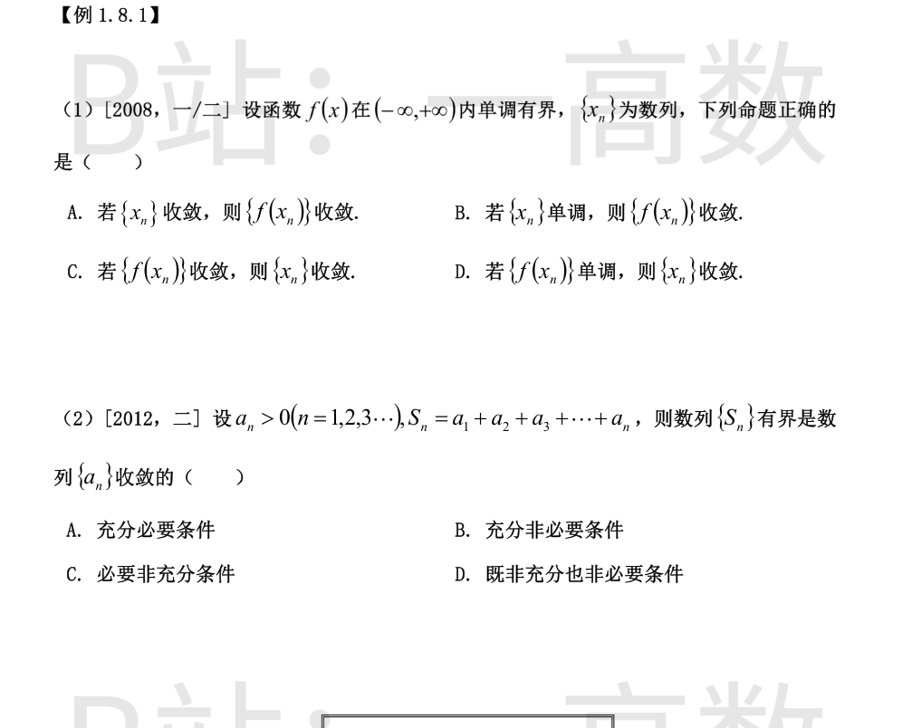
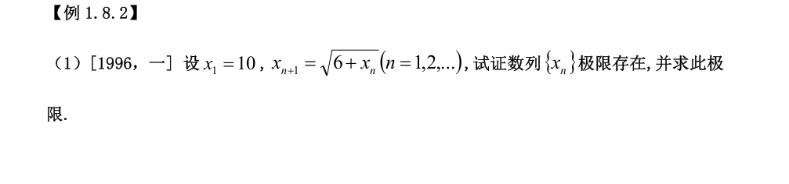
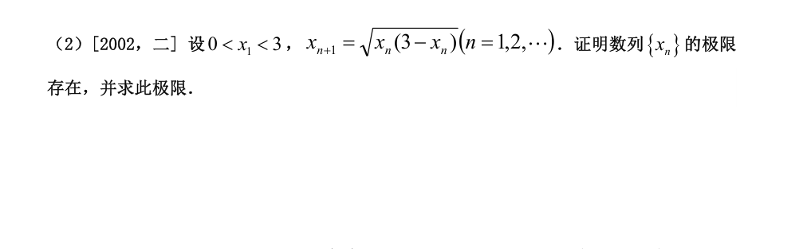
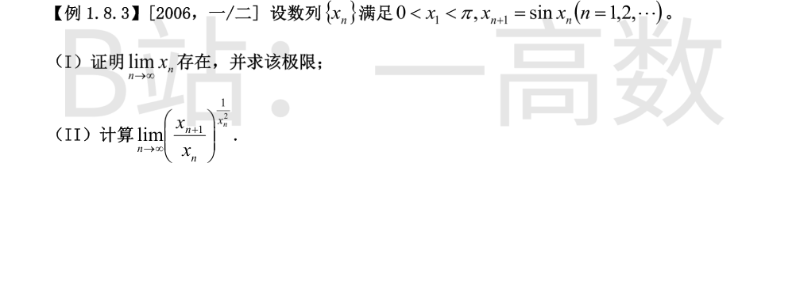
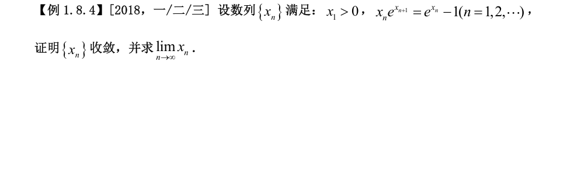
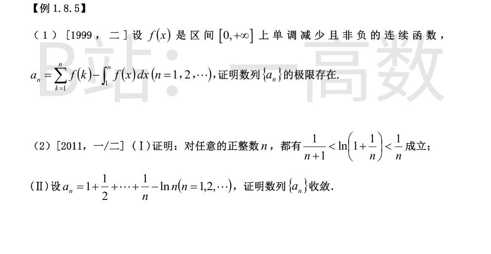
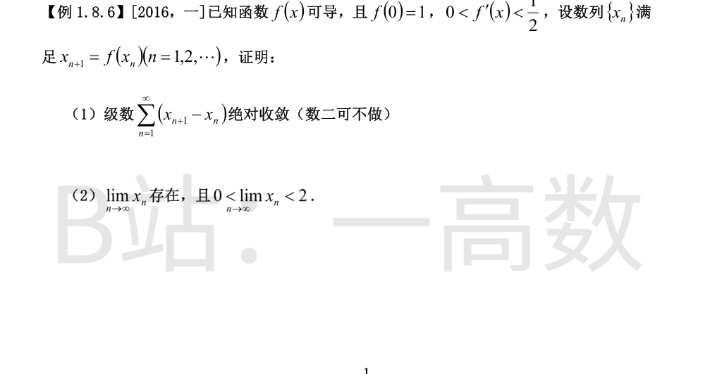
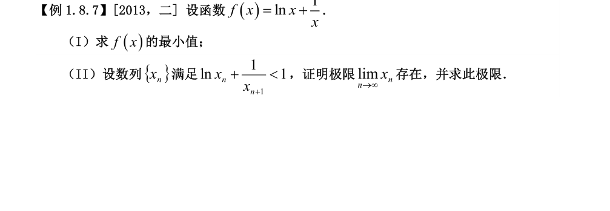
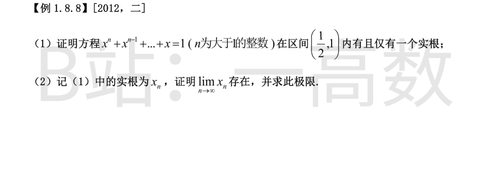

**选 B。**
- **B 正确**：{x_n} 单调，而外层 f 单调，故复合数列 {f(x_n)} 单调；又 f 在 R 上有界，故 {f(x_n)} 有界。由单调有界准则，{f(x_n)} 收敛。
- **A 错误**：取 f(x)=0（x<0），f(x)=1（x≥0）（单调有界但在 x=0 间断），令 x_n=(-1)^n/n → 0，则 f(x_n)=0,1,0,1,… 不收敛。
- **C 错误**：取 f(x)=\arctan x，x_n=n，则 f(x_n)→π/2 收敛，但 x_n 发散。
- **D 错误**：同一反例，{\arctan n} 单调且收敛，但 {n} 发散。
**充分性**：由 a_n>0 知 S_{n+1}-S_n=a_n>0，故 {S_n} 单调递增；又 {S_n} 有界，由单调有界准则 S_n→S。于是
$$a_n=S_n-S_{n-1}\to S-S=0,$$
故 {a_n} 收敛（收敛于 0）。
**非必要**：取 a_n≡1，则 {a_n} 收敛，但 S_n=n 无界。
故 {S_n} 有界是 {a_n} 收敛的充分非必要条件，选 **B**。


**（i）有下界**：归纳证 x_n>3（n≥1）。x_1=10>3；设 x_n>3，则
$$x_{n+1}=\sqrt{6+x_n}>\sqrt{9}=3.$$
**（ii）单调递减**：
$$x_{n+1}-x_n=\sqrt{6+x_n}-x_n=\frac{6+x_n-x_n^2}{\sqrt{6+x_n}+x_n}=-\frac{(x_n-3)(x_n+2)}{\sqrt{6+x_n}+x_n}<0$$
（因 x_n>3）。故 {x_n} 单调递减。
由单调有界准则 {x_n} 收敛。设 \lim x_n=A≥3，对递推式两边取极限：
$$A=\sqrt{6+A}\ \Rightarrow\ A^2-A-6=0\ \Rightarrow\ (A-3)(A+2)=0,$$
A=3 或 A=-2，由 A≥3 舍去 A=-2，得
$$\lim_{n\to\infty}x_n=3.$$
**（i）有界性**：归纳。0<x_1<3；设 0<x_n<3，则 x_{n+1}^2=x_n(3-x_n)>0，故 x_{n+1}>0；再由均值不等式
$$x_{n+1}^2=x_n(3-x_n)\le\left(\frac{x_n+(3-x_n)}{2}\right)^2=\frac{9}{4},$$
得 x_{n+1}≤3/2<3。于是对一切 n≥2 有 0<x_n≤3/2。
**（ii）单调性（n≥2）**：因 3-x_n≥3/2≥x_n，
$$x_{n+1}=\sqrt{x_n(3-x_n)}\ge\sqrt{x_n\cdot x_n}=x_n,$$
故 {x_n}（n≥2）单调递增。
递增且有上界 3/2，由单调有界准则收敛。设 \lim x_n=A，则 A∈(0,3/2]，取极限：
$$A^2=A(3-A)\ \Rightarrow\ A=0\ \text{或}\ A=\frac{3}{2},$$
因 A≥x_2>0，舍 A=0，得
$$\lim_{n\to\infty}x_n=\frac{3}{2}.$$

**（i）** 归纳证 0<x_n<π。x_1∈(0,π)；若 0<x_n<π，则由 0<t<π 时 0<\sin t<t 得
$$0<x_{n+1}=\sin x_n<x_n<\pi.$$
**（ii）** 故 {x_n} 单调递减且有下界 0，由单调有界准则收敛。设 \lim x_n=A≥0，对递推式取极限得 A=\sin A。因 A>0 时 \sin A<A，该方程在 [0,π) 上仅有解 A=0，故
$$\lim_{n\to\infty}x_n=0.$$
由 (I) 知 x_n→0^+，且 x_{n+1}=\sin x_n。记
$$L=\lim_{n\to\infty}\left(\frac{\sin x_n}{x_n}\right)^{1/x_n^2},$$
取对数并令 t=x_n（t→0^+）：
$$\ln L=\lim_{t\to0^+}\frac{\ln\dfrac{\sin t}{t}}{t^2}.$$
由泰勒公式 \dfrac{\sin t}{t}=1-\dfrac{t^2}{6}+o(t^2)，结合 \ln(1+u)=u+o(u)（u→0），得
$$\ln\frac{\sin t}{t}=-\frac{t^2}{6}+o(t^2),$$
于是
$$\ln L=\lim_{t\to0^+}\frac{-\frac{t^2}{6}+o(t^2)}{t^2}=-\frac{1}{6},$$
所以
$$L=e^{-1/6}.$$

**（i）证 x_n>0 对一切 n 成立**：x_1>0；设 x_n>0，由递推式
$$e^{x_{n+1}}=\frac{e^{x_n}-1}{x_n}>0,$$
故 x_{n+1} 有定义。又当 t>0 时 e^t>1+t，故 e^{x_n}-1>x_n>0，从而
$$e^{x_{n+1}}=\frac{e^{x_n}-1}{x_n}>1\ \Rightarrow\ x_{n+1}>0.$$
**（ii）证 {x_n} 单调递减**：需证 e^{x_{n+1}}<e^{x_n}，即
$$\frac{e^{x_n}-1}{x_n}<e^{x_n}\ \Longleftrightarrow\ 1-e^{-x_n}<x_n\ \Longleftrightarrow\ e^{-x_n}>1-x_n,$$
最后一式对一切实数成立（x_n>0 时严格），故 x_{n+1}<x_n。
**（iii）求极限**：{x_n} 单调递减且有下界 0，由单调有界准则收敛。设 A=\lim x_n≥0（此时 x_{n+1}→A），对递推式取极限：
$$Ae^A=e^A-1\ \Rightarrow\ e^A(A-1)=-1.$$
令 g(t)=e^t(t-1)，则 g(0)=-1，g'(t)=te^t>0（t>0），故 g 在 [0,+\infty) 上严格递增，g(t)=-1 仅有唯一解 t=0。因此
$$\lim_{n\to\infty}x_n=0.$$

**（i）单调性**：
$$a_{n+1}-a_n=f(n+1)-\int_n^{n+1}f(x)\,dx.$$
因 f 单调减少，在 [n,n+1] 上 f(x)≥f(n+1)，故
$$\int_n^{n+1}f(x)\,dx\ge\int_n^{n+1}f(n+1)\,dx=f(n+1)\ \Rightarrow\ a_{n+1}-a_n\le0,$$
即 {a_n} 单调不增。
**（ii）有下界**：在 [k,k+1] 上 f(x)≤f(k)，故
$$\int_1^n f(x)\,dx=\sum_{k=1}^{n-1}\int_k^{k+1}f(x)\,dx\le\sum_{k=1}^{n-1}f(k),$$
于是
$$a_n=\sum_{k=1}^{n}f(k)-\int_1^n f(x)\,dx\ge f(n)\ge0.$$
\{a_n\} 单调不增且有下界 0，由单调有界准则，\{a_n\} 收敛，即极限存在。
**(I)** 先证对 x>0 有
$$\frac{x}{1+x}<\ln(1+x)<x.$$
右半：令 \varphi(x)=x-\ln(1+x)，\varphi(0)=0，\varphi'(x)=1-\dfrac{1}{1+x}=\dfrac{x}{1+x}>0（x>0），故 \varphi(x)>0，即 \ln(1+x)<x。
左半：令 \psi(x)=\ln(1+x)-\dfrac{x}{1+x}，\psi(0)=0，\psi'(x)=\dfrac{1}{1+x}-\dfrac{1}{(1+x)^2}=\dfrac{x}{(1+x)^2}>0，故 \psi(x)>0，即 \ln(1+x)>\dfrac{x}{1+x}。
取 x=\dfrac{1}{n} 即得
$$\frac{1}{n+1}<\ln\!\left(1+\frac{1}{n}\right)<\frac{1}{n}.$$
**(II) 单调性**：
$$a_{n+1}-a_n=\frac{1}{n+1}-\ln\!\left(1+\frac{1}{n}\right)<0\quad(\text{由(I)}),$$
故 {a_n} 单调递减。
**有界**：将 (I) 右半对 k=1,…,n−1 求和：
$$\ln n=\sum_{k=1}^{n-1}\ln\!\left(1+\frac{1}{k}\right)<\sum_{k=1}^{n-1}\frac{1}{k}\ \Rightarrow\ a_n=\sum_{k=1}^{n}\frac{1}{k}-\ln n>\frac{1}{n}>0;$$
将 (I) 左半对 k=1,…,n−1 求和：
$$\ln n>\sum_{k=1}^{n-1}\frac{1}{k+1}\ \Rightarrow\ a_n=1+\sum_{k=1}^{n-1}\frac{1}{k+1}-\ln n<1.$$
故 0<a_n<1。{a_n} 单调递减且有下界，由单调有界准则收敛。（其极限即 Euler 常数 γ。）

当 n≥2 时，由拉格朗日中值定理，存在介于 x_{n-1} 与 x_n 之间的 ξ_n，使
$$|x_{n+1}-x_n|=|f(x_n)-f(x_{n-1})|=f'(\xi_n)\,|x_n-x_{n-1}|\le\frac{1}{2}\,|x_n-x_{n-1}|.$$
记 d_n=|x_{n+1}-x_n|，递推得
$$d_n\le\frac{1}{2}d_{n-1}\le\cdots\le\left(\frac{1}{2}\right)^{n-1}d_1.$$
于是
$$\sum_{n=1}^{\infty}|x_{n+1}-x_n|=\sum_{n=1}^{\infty}d_n\le d_1\sum_{n=1}^{\infty}\left(\frac{1}{2}\right)^{n-1}=2\,|x_2-x_1|<+\infty,$$
故级数 \sum(x_{n+1}-x_n) 绝对收敛。
**存在性**：由 (1)，\sum_{k=1}^{\infty}(x_{k+1}-x_k) 收敛，而
$$x_n=x_1+\sum_{k=1}^{n-1}(x_{k+1}-x_k),$$
故 {x_n} 收敛。设 A=\lim x_n。
**求范围**：f 可导故连续，对 x_{n+1}=f(x_n) 取极限得 A=f(A)。由拉格朗日中值定理（在以 0 与 A 为端点的区间上），存在 ξ 介于 0 与 A 之间，使
$$f(A)-f(0)=f'(\xi)\,A\ \Rightarrow\ A-1=f'(\xi)\,A\ \Rightarrow\ A=\frac{1}{1-f'(\xi)}.$$
由 0<f'(\xi)<1/2 得 1/2<1-f'(\xi)<1，故
$$1<A=\frac{1}{1-f'(\xi)}<2,$$
即 \lim x_n 存在且 0<A<2。

$$f'(x)=\frac{1}{x}-\frac{1}{x^2}=\frac{x-1}{x^2}\quad(x>0).$$
当 0<x<1 时 f'(x)<0，f 单调减少；当 x>1 时 f'(x)>0，f 单调增加。故 f 在 x=1 处取得（唯一）极小值，也是最小值：
$$f(1)=\ln 1+1=1,$$
即最小值为 1，在 x=1 处取得。
由 (I)，对一切 x>0 有
$$\ln x+\frac{1}{x}\ge 1\quad(\text{等号当且仅当 }x=1).$$
**单调性**：将上式用于 x_n：\ln x_n+1/x_n≥1，结合条件 \ln x_n+1/x_{n+1}<1，得
$$\frac{1}{x_{n+1}}<\frac{1}{x_n}\ \Rightarrow\ x_{n+1}>x_n,$$
故 {x_n} 单调递增。
**有上界**：由 x_{n+1}>0 知 1/x_{n+1}>0，故 1-\ln x_n>1/x_{n+1}>0，即 \ln x_n<1，从而
$$x_n<e\quad(n=1,2,\dots).$$
由单调有界准则，{x_n} 收敛。设 A=\lim x_n（A>0），对条件不等式取极限得 \ln A+1/A≤1；另一方面由最小值性质 \ln A+1/A≥1。故
$$\ln A+\frac{1}{A}=1,$$
由 (I) 等号仅在 x=1 处成立，故 A=1，即
$$\lim_{n\to\infty}x_n=1.$$

设 f_n(x)=x^n+x^{n-1}+\cdots+x-1，其在 R 上连续。
**存在性**：
$$f_n\!\left(\frac{1}{2}\right)=\frac{1}{2}+\frac{1}{2^2}+\cdots+\frac{1}{2^n}-1=(1-2^{-n})-1=-\frac{1}{2^n}<0,$$
$$f_n(1)=\underbrace{1+\cdots+1}_{n}-1=n-1>0\quad(n>1).$$
由零点定理，f_n 在 (1/2,1) 内至少有一个零点。
**唯一性**：当 x>0 时
$$f_n'(x)=1+2x+3x^2+\cdots+nx^{n-1}>0,$$
故 f_n 在 (1/2,1) 上严格单调增加，至多一个零点。
综上，方程在 (1/2,1) 内有且仅有一个实根。
x_n∈(1/2,1) 满足 \sum_{k=1}^{n}x_n^k=1。
**单调性**：把 x_n 代入 n+1 次方程左端：
$$\sum_{k=1}^{n+1}x_n^k=1+x_n^{n+1}>1=\sum_{k=1}^{n+1}x_{n+1}^k.$$
因 g(x)=\sum_{k=1}^{n+1}x^k 在 (0,+\infty) 严格递增（g'(x)=1+2x+\cdots+(n+1)x^n>0），由 g(x_n)>g(x_{n+1}) 得 x_n>x_{n+1}，即 {x_n} 单调递减。
**收敛性**：{x_n} 单调递减且有下界 1/2，由单调有界准则收敛。设 A=\lim x_n，则 A∈[1/2,1)。
**求极限**：由等比数列求和，
$$\sum_{k=1}^{n}x_n^k=\frac{x_n(1-x_n^{n})}{1-x_n}=1\ \Rightarrow\ x_n-x_n^{n+1}=1-x_n\ \Rightarrow\ 2x_n-1=x_n^{n+1}.$$
因 {x_n} 递减，对一切 n 有 1/2<x_n≤x_2<1，故
$$0<x_n^{n+1}\le x_2^{\,n+1}\to0,$$
对 2x_n-1=x_n^{n+1} 两边取极限得 2A-1=0，即
$$\lim_{n\to\infty}x_n=\frac{1}{2}.$$